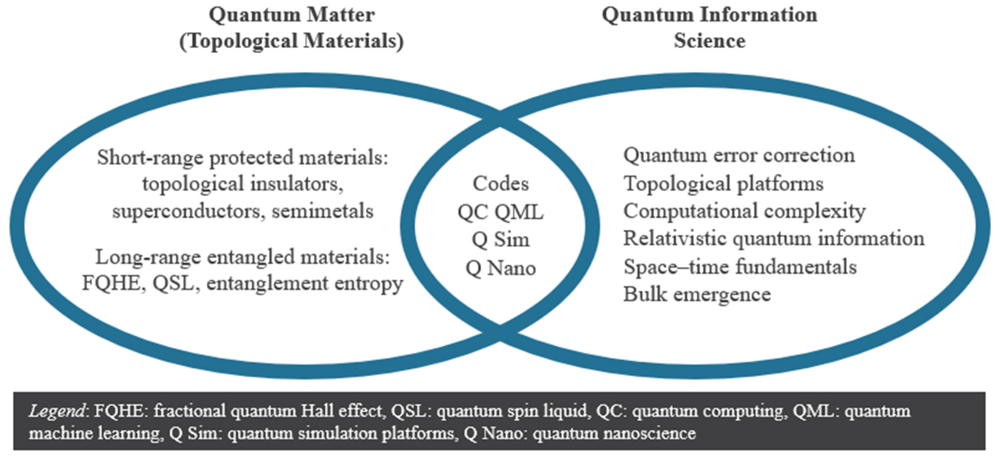

QI Study Group
Quantum Information & Many‑body Physics
I founded a quantum‑information study group in 2024 that ranges from resource‑theoretic questions in quantum computing to quantum‑information approaches to many‑body physics. Topics we have tackled so far include:
- Resource Theory of Quantum Computing — How thermodynamic principles constrain quantum information processing and thermalisation.
- Quantum Information Meets Quantum Matter (textbook) — Many‑body interactions & topological phases as resources for robust quantum computation.
- Tensor Network Contractions (textbook) — Efficient contraction schemes and their application to simulate quantum many‑body systems.
- Entanglement & Correlations in Many‑body Physics — Structures of entanglement and their impact on quantum‑state complexity.